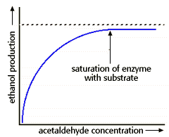

Energy, Enzymes, and Catalysis Problem Set
Problem 5 Tutorial: Why do enzymes reach a maximum rate at high substrate concentration?
In the presence of alcohol dehydrogenase, the rate of reduction of acetaldehyde to ethanol increases as you increase the concentration of acetaldehyde. Eventually the rate of the reaction reaches a maximum, where further increases in the concentration of acetaldehyde have no effect. Why?
The reduction of acetaldehyde to ethanol is an oxidation-reduction reaction. Acetaldehyde is reduced by the addition of 2 electrons and 2 hydrogen ions supplied by NADH, which is reduced to NAD+.
The equation for this reaction is:
| In the presence of alcohol dehydrogenase, the rate of the production of ethanol increases as the concentration of acetaldehyde is increased as shown in the rate curve to the right. |  |
An enzyme catalyzed reaction may be written as:
E is the enzyme, S is the substrate (acetaldehyde), ES is the enzyme-substrate complex and P is the product (ethanol).
The substrate binds to a specific site on the surface of the enzyme known as the active site. The reaction occurs on the enzyme surface, after which product and enzyme are released. The enzyme can then bind another substrate, and continue to catalyze the reduction of acetaldehyde many, many times per minute.
An explanation for the shape of the enzyme kinetics curve
At low substrate concentration the rate of ethanol production increases sharply with increasing concentration of acetaldehyde because there is lots of free enzyme available (E). At high substrate concentration, the rate of ethanol production reaches a plateau as the enzyme active sites of alcohol dehydrogenase are saturated with substrate (ES complex).


Department of Biochemistry and Molecular Biophysics
University of Arizona
Revised: October 2004
Contact the Development Team
http://biology.arizona.edu
All contents copyright © 1996. All rights reserved.